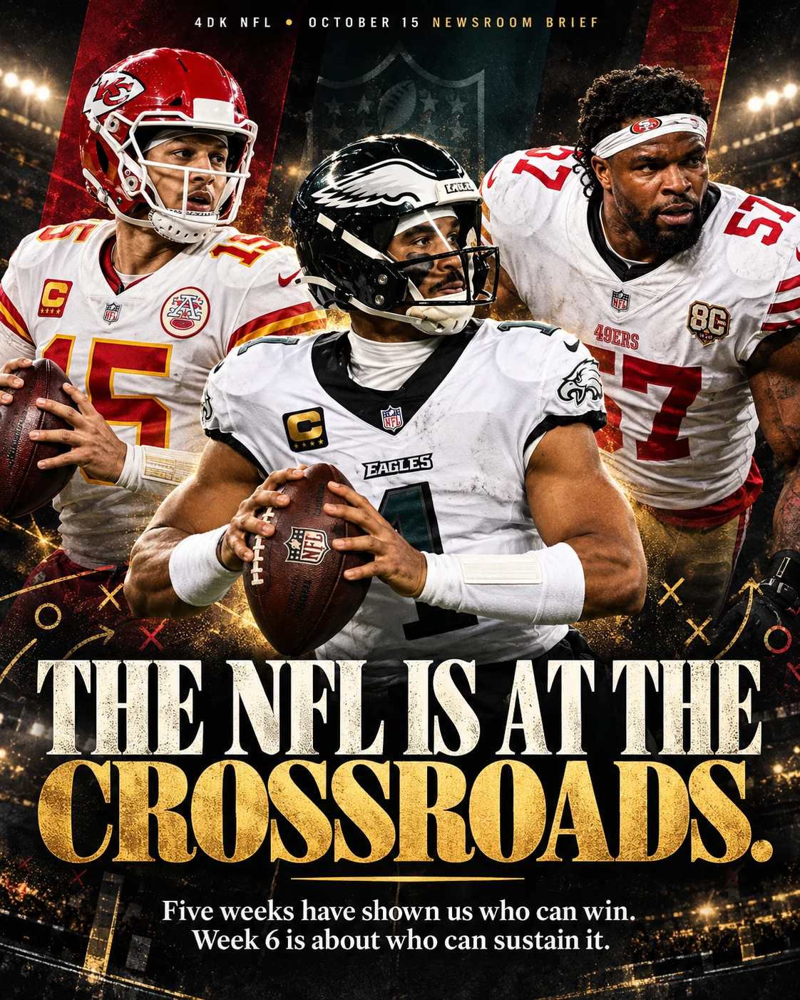

Five weeks have shown us who can win. Week 6 is about who can sustain it: San Francisco and Minnesota stay unbeaten, Buffalo answers in overtime, and injury lists threaten to reshape the next set of matchups.
BY 4 DA KULTURE • OCTOBER 15, 2026 • ENTERING WEEK 6

4 DA KULTURE • THE WEEK 6 EDITORIAL COVER
UNBEATEN49ERS • 5–0
UNBEATENVIKINGS • 5–0
MONDAY FINALBILLS 37 • RAMS 34 (OT)
UP NEXTWEEK 6 • OCT 15–19
01 • THE 4DK LEAD
SAN FRANCISCO ISN’T JUST SURVIVING.
The 49ers walked into Seattle and left 5–0 after a 32–29 win that required more than a clean first quarter and a nice game plan. Brock Purdy threw for only 189 yards, but the defining evidence came late: two fourth-quarter scoring drives when Seattle had a legitimate opportunity to seize control. We care about efficiency over empty totals, and the way San Francisco handled pressure is as important as the final score.
Mike Evans finished with seven receptions, 113 yards and a touchdown. Five of those catches came in tight-window situations, which gets to the heart of what his arrival adds to this offense. Purdy now has a receiver he can trust to win when the design doesn’t produce daylight. Our early read: Evans looks like the true alpha of the receiving room, particularly on money downs. That’s an evaluation, not a coronation after five games.
The defense forced four Seattle turnovers and produced five sacks even without Nick Bosa. The challenge is sustainability. A 5–0 record doesn’t put injured bodies back on the field in December. Health, pass protection and another reliable offensive piece remain our biggest long-range questions. Washington comes to town Monday, and the test is avoiding a letdown after an emotional road win.
02 • THE WEEK 5 RESET
WHO CHANGED THEIR STORY?
BUFFALO • 4–1
ALLEN WRITES THE LAST CHAPTER
The Bills outlasted the Rams 37–34 in overtime. Allen delivered 210 passing yards and 121 rushing yards, a reminder that the most dangerous version of Buffalo is the one where he controls every situation, not merely the stat sheet. They still have to clean up the details that turned this into an overtime war.
MINNESOTA • 5–0
THE VIKINGS CAN WIN TWO WAYS
Minnesota’s 23–13 win over the Saints was more encouraging offensively. Kyler Murray completed 24 of 30 passes for 229 yards and a touchdown, Aaron Jones ran for 113 yards and Justin Jefferson returned to the scoring column. The defense kept Tyler Shough under 100 passing yards. That’s a more complete formula than leaning on chaos and field goals.
NEW ENGLAND • 3–2
MAYE IS BACK IN THE CONVERSATION
The Patriots’ 45–17 demolition of Las Vegas showed why Drake Maye belongs in our moving MVP conversation: four passing touchdowns and one rushing score. The Raiders, meanwhile, have to face the Bills after giving up 45. Vegas has to get the running game and protection right before talking seriously about a turnaround.
JACKSONVILLE • 4–1
A WIN THAT CHANGES BELIEF
The Jaguars’ 19–17 win over Philadelphia in London came down to Cam Little’s 57-yard field goal at the horn. Trevor Lawrence passed for 331 yards and two touchdowns. Jacksonville has earned the right to be evaluated as more than an early surprise; the Eagles have bigger questions about protecting leads and finishing offensive possessions.
DETROIT • 3–2
GOFF’S PRECISION, GIBBS’ VIOLENCE
The Lions hung 45 on Arizona, and Jared Goff reached 12 touchdown passes without a turnover across five games. Jahmyr Gibbs rushed for 151 yards and two touchdowns. Detroit can win fast or physical; the concern is whether the defense keeps forcing the offense to win shootouts.
BALTIMORE • 4–1
THE DEPTH COUNTED
The Ravens beat Atlanta 30–23 in overtime without Lamar Jackson. Tyler Huntley and Derrick Henry helped find a way through an uneven passing night. That win matters, but the next part of the evaluation depends on Lamar’s recovery from his ankle injury—not a presumed return date.
03 • THE FIELD REPORT
INJURIES THAT CHANGE WEEK 6
SAN FRANCISCO • MONDAY
GREENLAW IS OUT AGAINST WASHINGTON
Dre Greenlaw will miss Week 6 after his one-game suspension was upheld. San Francisco is already having to manage defensive depth without Nick Bosa; that makes coverage communication and run fits even more important against Jayden Daniels. This is a confirmed suspension, not an injury designation.
SEAHAWKS @ BRONCOS • THURSDAY
DENVER’S SECONDARY HAS A PROBLEM
Denver ruled out cornerback Patrick Surtain II and safety Talanoa Hufanga (both ankle). Riley Moss (rib) is questionable. Seattle receiver Jaxon Smith-Njigba and lineman Leonard Williams are cleared, but linebacker Drake Thomas is out. We expect Seattle to test coverage early, and Denver needs pass rush and disciplined leverage to cover for the absences.
RAVENS @ BROWNS • SUNDAY
DON’T ASSUME LAMAR PLAYS
Lamar Jackson is day-to-day with an ankle injury and missed Wednesday’s practice. Baltimore is hopeful about Sunday, but availability remains unresolved. The Browns’ pressure and protection issues on both sides complicate this matchup. Recheck official game statuses before kickoff.
PATRIOTS @ JETS • SUNDAY
NEW ENGLAND’S DEPTH IS BEING TESTED
New England opened the practice window for A.J. Brown, who has not played since the opener. Christian Gonzalez returned in limited fashion and Will Campbell and TreVeyon Henderson were among recent Week 5 injuries. Practicing is not the same thing as being cleared to play.
BILLS @ RAIDERS • SUNDAY
BUFFALO MONITORS ITS DEPTH
After the Monday-night overtime game, Buffalo’s Wednesday walkthrough estimate listed Spencer Brown and Joshua Palmer as limited, with DJ Moore and Ed Oliver out. The Raiders need to exploit any protection shuffle, but their own offense is under pressure after the New England loss.
4DK verification note: This snapshot reflects injury information available through October 14. The official final reports and game-day inactives supersede these practice statuses.
04 • WEEK 6 SHOWCASE
FOUR GAMES WE’RE CIRCLING
THURSDAY • 5:15 PT
SEAHAWKS AT BRONCOS
Both 3–2 and coming off revealing games. Seattle can respond to the 49ers loss by taking advantage of Denver’s defensive backfield absences, but Sam Darnold must protect the ball. Four turnovers against San Francisco made the Seahawks their own worst enemy.
SUNDAY • 1:25 PT
BILLS AT RAIDERS
Allen just put Buffalo on his back. Las Vegas has lost two straight, and the next two games bring Buffalo and Los Angeles Rams. The question isn’t how talented the Raiders are on paper; it’s whether the offense can sustain drives and prevent the defense from defending short fields all afternoon.
SUNDAY • 5:20 PT
COWBOYS AT PACKERS
Dallas heads into a prime-time environment after dropping a winnable game to Tampa Bay. Green Bay just handled Chicago 31–7. The test is whether Dallas can play situational football for all four quarters, because Jordan Love gives Green Bay too many ways to punish busted leverage.
MONDAY • 5:15 PT
COMMANDERS AT 49ERS
San Francisco is 5–0; Washington tied the Giants 27–27 after costly late-game decisions. We’re watching how Purdy and Evans attack the Commanders’ coverage, how much CMC is asked to carry, and whether the Niners’ defense still plays with the same force after a physical division win.
We will update records, injuries, rankings, and previews when new games or official reports change the picture. Anything labeled Week 5 stays a Week 5 snapshot—not a claim of live Week 6 standings.